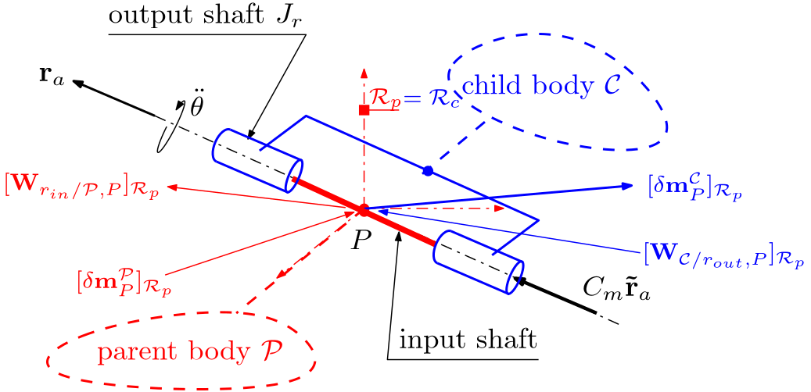
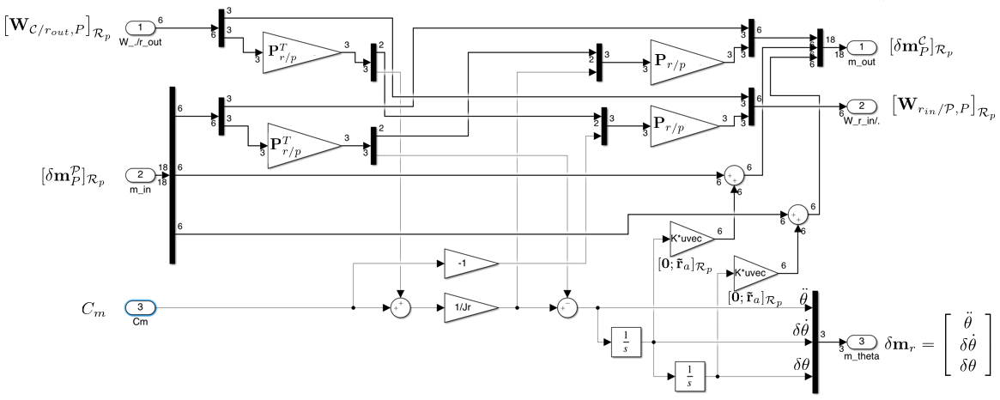
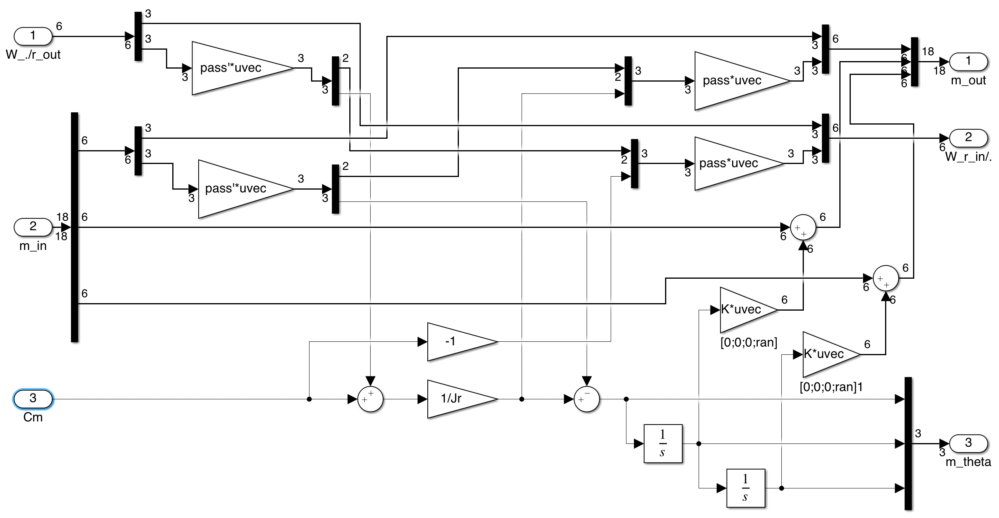

Revolute joint
Linear augmented TITOP model of a revolute joint $27 \times 25$.
This block implements the augmented $27 \times 25$ TITOP (Two-Input Two-Output Ports) linear model of a revolute joint located at the interconnection $P$ between a parent body $\mathcal P$ and a child body $\mathcal C$. The inputs and the outputs of this model are:
- the $18 \times 6 $ transfer from the wrench applied by the child body $\mathcal C$ at the point $P$ on the output shaft of the revolute joint to the motion vector of the body $\mathcal C$ at the point $P$, projected in the parent body frame $\mathcal R_p$,
- the $6 \times 18 $ transfer from the motion vector imposed by the parent body $\mathcal P$ at the connection point $P$ to the wrench applied by the input shaft of the revolute joint to the parent body $\mathcal P$ at the point $P$, projected in the parent body frame $\mathcal R_p$,
- the $3 \times 1 $ transfer from the torque applied to the output shaft by the input shaft (thanks to an actuator) to the relative motion vector variation $\delta\mathbf m_r=\left[\ddot\theta,\;\;\delta\dot\theta,\;\;\delta\theta\right]^T$,
Remarks:
- This block includes 2 integrators to model the rigid mode of the revolute joint. The initial conditions on these 2 integrators are null since only the linear model and small variations around $0$ are considered. That justifies the notation $\delta\dot\theta$ and $\delta\theta$ for the successive integration of the accelarations $\ddot\theta$ (assumed to be small also).
- It is assumed that the variations of the motion vectors, the interaction wrenches and the relative angular position $\delta\theta$ are small, thus, neglegting the second order terms, the child body frame is assumed to be aligned with the parent body frame: $\mathcal R_c=\mathcal R_p$ (see following Figure).
See also: General notations, Revolute joint + configuration, Prismatic joint, 1-port flexible body, Multi port rigid body
Contents
Description
Considering a revolute joint (see following Figure) at the point $P$ between a parent body $\mathcal P$, clamped on the input shaft of the revolute joint (denoted $r_{in}$), and the child body $\mathcal C$, clamped on the output shaft of the revolute joint (denoted $r_{out}$).

Let us define:
- $\mathcal{R}_p$: the local (inherit) frame attached to the parent body $\mathcal P$,
- $\mathbf{r}_a$: the direction of the revolute joint axis and $\mathbf{\tilde{r}}_a$ a unitary vector along this direction,
- $C_m$: the driving torque which can be applied inside the revolute joint by the input shaft to the output shaft,
- $\ddot{\theta}$, $\delta\dot\theta$, $\delta\theta$: the relative angular acceleration, velocity and position of the output shaft w.r.t. to the input shaft,
- $J_r$: the inertia of the output shaft,
- $\mathbf{W}_{\mathcal C/r_{out},P}=\left[\mathbf{F}^T_{\mathcal C/r_{out}} \;\;\mathbf{T}^T_{\mathcal C/r_{out},P}\right]^T$: the external wrench ($6\times 1$) applied by the child body $\mathcal C$ on the output shaft, at point $P$,
- $\delta\mathbf{m}^{\mathcal C}_{P}$ the motion vector ($18\times 1$) of the child body $\mathcal C$ at the point $P$. $\delta\mathbf m^\mathcal{C}_P=\left[{\boldsymbol{\mathbf{x}''}^\mathcal{C}_P}^T\;\;{\delta\boldsymbol{\mathbf x'}^\mathcal{C}_P}^T\;\;{\delta\mathbf{x}^\mathcal{C}_P}^T\right]^T$ with $\boldsymbol{\mathbf{x}''}^\mathcal{C}_P= \left[ {\mathbf{a}^{\mathcal C}_P}^T \;\; {\boldsymbol{\dot\omega}^{\mathcal C}}^T \right]^T$ ($\delta\mathbf{m}^{\mathcal C}_{P}=\delta\mathbf m_{out}$: the motion vector of the output shaft),
- $\delta\mathbf{m}^{\mathcal P}_{P}$ the motion vector ($18\times 1$) of the parent body $\mathcal P$ at the point $P$. $\delta\mathbf m^\mathcal{P}_P=\left[{\boldsymbol{\mathbf{x}''}^\mathcal{P}_P}^T\;\;{\delta\boldsymbol{\mathbf x'}^\mathcal{P}_P}^T\;\;{\delta\mathbf{x}^\mathcal{P}_P}^T\right]^T$ with $\boldsymbol{\mathbf{x}''}^\mathcal{P}_P= \left[ {\mathbf{a}^{\mathcal P}_P}^T \;\; {\boldsymbol{\dot\omega}^{\mathcal P}}^T \right]^T$ ($\delta\mathbf{m}^{\mathcal P}_{P}=\delta\mathbf m_{in}$: the motion vector of the input shaft),
- $\mathbf{W}_{r_{in}/\mathcal P,P}=\left[\mathbf{F}^T_{r_{in}/\mathcal P} \;\;\mathbf{T}^T_{r_{in}/\mathcal P,P}\right]^T$: the wrench ($6\times 1$) applied by input shaft on the parent body $\mathcal P$, at point $P$,
Then, the dynamic model projected on the revolute joint axis reads:
$$\mathbf{\tilde{r}}_a.\mathbf{T}_{\mathcal C/r_{out},P}+C_m=J_r\underbrace{\left(\ddot{\theta}+\mathbf{\tilde{r}}_a.\dot{\boldsymbol{\omega}}^{\mathcal P}\right)}_{\mathbf{\tilde{r}}_a.\dot{\boldsymbol{\omega}}^{\mathcal C}} $$
and: $$\boldsymbol{\omega}^{\mathcal C}=\boldsymbol{\omega}^{\mathcal P}+\delta\dot\theta \mathbf{\tilde{r}}_a$$ $$\boldsymbol\Theta^{\mathcal C} = \boldsymbol\Theta^{\mathcal P}+ \delta\theta \mathbf{\tilde{r}}_a$$
$$ \mathbf{\tilde{r}}_a.\mathbf{T}_{r_{in}/\mathcal P,P}=-C_m,$$
where: $\mathbf{a}.\mathbf{b}=\left[\mathbf{a}\right]^T_{\mathcal{R}_p}\left[\mathbf{b}\right]_{\mathcal{R}_p}$ stands for the scalar product of vectors $\mathbf{a}$ and $\mathbf{b}$.
The components (along the 5 complementary axes) of the wrench and acceleration twist are directly transferred between the input and output shafts.
Considering the DCM matrix mapping the revolute joint axis on the third axis :
$$\mathbf{P}_{r/p}=\mathbf{P_r}_p\left[\begin{array}{ccc} \mbox{det}(\mathbf{P_{r}}_p) & 0 & 0\\ 0 & 1 & 0 \\ 0 & 0 & 1\end{array}\right]\;\; \mbox{with: } \mathbf{P_r}_p=\left[\mbox{null}([\mathbf{\tilde{r}}_a]^T_{\mathcal{R}_p})\quad [\mathbf{\tilde{r}}_a]_{\mathcal{R}_p}\right],$$ then, the block-diagram of the TITOP model of a revolute joint can be depicted in the following Figure.

Ports
Inputs:
- W./r_out $=\left[\mathbf{W}_{\mathcal C/r_{out},P}\right]_{\mathcal R_p}$: 6 component signal (units: $N$ and $N.m$),
- m_in $=\left[\delta\mathbf{m}^{\mathcal P}_{P}\right]_{\mathcal{R}_p}$: 18 component signal (units: $m/s^2$, $rd/s^2$, $m/s$, $rd/s$, $m$, $rd$),
- Cm $=C_m$: scalar signal (unit: $N.m$).
Outputs:
- m_out $=\left[\delta\mathbf{m}^{\mathcal C}_{P}\right]_{\mathcal{R}_p}$: 18 component signal (units: $m/s^2$, $rd/s^2$, $m/s$, $rd/s$, $m$, $rd$),
- Wr_in/. $=\left[\mathbf{W}_{r_{in}/\mathcal P,P}\right]_{\mathcal{R}_p}$: 6 component signal (units: $N$ and $N.m$),
- m_theta $=\delta\mathbf m_r=\left[\ddot\theta,\;\;\delta\dot\theta,\;\;\delta\theta\right]^T$: the relative motion vector (unit: $rd/s^2$, $rd/s$, $rd$).
Parameters
The input parameters are:
- the direction of the joint-axis in the local frame (3x1 vector): $\left[\mathbf{r}_a\right]_{\mathcal{R}_a}$,
- the output shaft inertia (unit: $Kg.m^2$): $J_r$
Simulink diagram under the mask

with: $\mathrm{pass}=\mathbf{P}_{r/p}$.